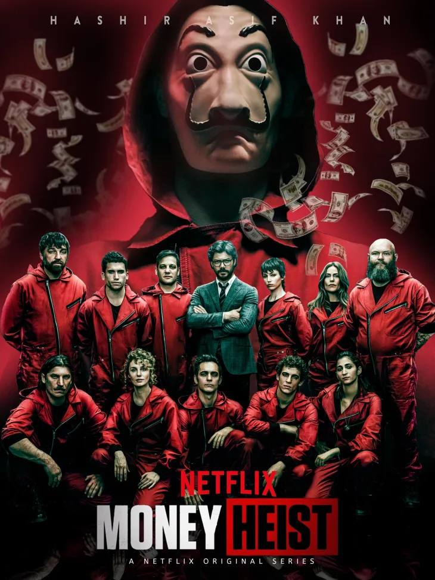

Money Heist
Money Heist season1
S1-Ep:01

In Episode 1 of Money Heist Season 1, the story begins with a young woman named Tokyo, a fugitive on the run after a failed robbery left her wanted by the police. She’s approached by a mysterious man known as "The Professor," who offers her a chance at redemption through a meticulously planned heist. He gathers a group of eight criminals, each with unique skills and nothing to lose, giving them city names as aliases—Tokyo, Berlin, Nairobi, Rio, Denver, Moscow, Helsinki, and Oslo. Their target: the Royal Mint of Spain, where they plan to print billions of euros without stealing a single existing bill. As the operation begins, the robbers infiltrate the Mint wearing red jumpsuits and Salvador Dalí masks, taking 67 hostages, including the director of the Mint and a key figure, Alison Parker, the daughter of the British ambassador. Meanwhile, The Professor oversees the heist remotely, controlling every move and anticipating police actions. Tensions rise quickly as the hostages panic and authorities begin strategizing a response. The episode ends with a sense of suspense, laying the foundation for the psychological warfare, twists, and emotional drama that will unfold throughout the series.
S2-Ep:02
In this episode, the heist intensifies inside the Royal Mint of Spain as the robbers begin printing €50 notes after outfitting all hostages in red jumpsuits and giving them fake guns. Tokyo’s impulsive shooting of police—stemming from a misunderstanding involving Rio—threatens the Professor’s carefully crafted plan. Berlin asserts control, isolates Alison Parker (revealed to be the British Ambassador’s daughter), and forces her to make a public declaration, intensifying the political stakes. Meanwhile, tension builds outside; Inspector Raquel Murillo steps in as negotiator but is challenged by Colonel Prieto’s aggressive intervention. Prieto’s plan to storm the Mint with a camera-equipped robot backfires when they discover the robbers are heavily armed
Beneath the action, cracks begin to form in the robbers’ unity. Berlin confronts Rio about his off-plan romance with Tokyo, revealing that their relationship was hidden and shows the strain it places on the team. Flashbacks explore how Tokyo and Rio grew close in the forest during their five-month preparation. Meanwhile, Raquel struggles to strike a balance between diplomacy and authority, especially after Alison’s status as a VIP hostage makes her rescue priority. The episode ends with both sides digging in: the crew firmly in control inside, while the police face a moral and strategic impasse .
Money Heist season 2
S2- Ep:01

In Season 2, Episode 1 of Money Heist, the tension inside the Royal Mint escalates as the hostages grow more restless and the police intensify their investigation. The Professor continues to manipulate events from outside, carefully maintaining his cover as Salva while trying to stay one step ahead of Raquel, who is now growing increasingly suspicious. Meanwhile, internal conflicts start to build within the gang, particularly between Berlin and Tokyo, whose impulsive nature threatens the fragile control Berlin tries to maintain over the situation. Outside the Mint, Raquel moves closer to discovering the Professor’s true identity. She begins to question the coincidences surrounding Salva and starts piecing together evidence that could expose him. Inside, the robbers are also working against the clock to complete the heist and dig their escape tunnel. Emotions run high, relationships deepen, and the complexity of each character begins to unfold more, making the stakes even more personal and dangerous as the plan inches forward amidst growing chaos.
S2-Ep:02
As the episode progresses, the Professor’s control begins to fray. Raquel starts suspecting Salva’s true identity after receiving forensic results that contradict the supposed clues planted at the Toledo farmhouse. Meanwhile, the Professor has to think on his feet, especially during his encounter with Raquel’s ex-husband, Alberto. To avoid exposure, he resorts to violence—knocking Alberto unconscious and sabotaging the evidence—showing just how far he’s willing to go to keep his identity hidden. This moment marks a turning point in the Professor’s moral line, highlighting the pressure and intensity of the ongoing heist from outside the Mint. Inside, Tokyo’s rebellion causes serious consequences. Her impulsiveness puts the entire operation at risk. Berlin, who is often brutal but strategic, sees her as a threat to the mission’s success. After Tokyo is expelled from the Mint and captured by police, it deeply affects Río, who is emotionally shattered and begins questioning his role and trust in the plan. The team becomes increasingly divided, with Nairobi trying to keep the group stable. The episode ends on a tense cliffhanger, emphasizing how internal chaos and external threats are tightening the noose around both the heist crew and the Professor.
Money heist season 3
S3-Ep:01

titled "We're Back", the story picks up after the gang's successful escape from the Royal Mint of Spain. Each member is living in different parts of the world under new identities, enjoying the riches of their heist. However, their peaceful lives are interrupted when Rio is captured by the authorities after making a call to Tokyo. Desperate and distraught, Tokyo seeks out the Professor and convinces him to reunite the team to rescue Rio. The Professor, true to his ideals, devises an even bolder plan to draw attention and put pressure on the government to release Rio: this time, they plan to break into the Bank of Spain. The episode ends with the crew regrouping and donning the iconic red jumpsuits and Salvador Dalí masks once again. With new recruits joining the mission, the Professor makes it clear — this is not just a heist; it’s a declaration of war.
S3-Ep:02
In Money Heist Season 3, Episode 2, titled "Aikido", the plan to rob the Bank of Spain begins to unfold with precision and intensity. The crew, now reunited and expanded, takes over the bank by infiltrating it during a high-profile event. With hostages secured, they start executing the Professor's meticulous plan, which involves melting down gold reserves from the bank’s vault. Meanwhile, tensions rise among the team, especially with Palermo taking a leadership role and exhibiting a controlling, volatile nature. The episode also reveals the strategic use of red smoke bombs and coordinated confusion to gain control quickly and without lethal force. Outside the bank, the Professor manipulates public perception by leaking videos that justify the heist as a resistance movement, garnering public support and challenging the government’s stance. Meanwhile, Raquel—now known as Lisbon—is stationed in a hidden base and works closely with the Professor to manage logistics and communications. The episode masterfully balances high-stakes action inside the bank with psychological warfare and public influence outside, building momentum for the rest of the season.
Money heist season 4
S4-Ep:01
In Money Heist Season 4 Episode 1, titled "Game Over", the story picks up from the intense cliffhanger at the end of Season 3. Nairobi has just been shot by a sniper after being lured to the window by a photo of her son. The episode dives into the chaos that follows, with the gang inside the Bank of Spain scrambling to save her life. Tension builds as Tokyo takes over leadership, creating friction with Palermo, who had been commanding the group. The Professor, still in hiding in the forest, believes that Raquel (Lisbon) has been executed and is devastated, losing focus and making irrational decisions. Meanwhile, the police tighten their grip, taking advantage of the confusion within the bank and the Professor’s emotional state. Flashbacks reveal more about Berlin's past and his romantic relationship with Tatiana, adding emotional depth to the episode. The gang manages to perform emergency surgery on Nairobi with the help of the hostage doctor, but her condition remains critical. The episode ends with morale low, leadership fractured, and the fate of key characters uncertain, setting a tense and emotional tone for the rest of the season.
S4-Ep:02

In Money Heist Season 4, Episode 2 titled "Berlin's Wedding", the story shifts between the chaos inside the Bank of Spain and flashbacks of Berlin’s past. The episode opens with tension mounting as Nairobi's life hangs in the balance after being shot. The crew races against time to save her, performing an improvised surgery while also dealing with the immense pressure of ongoing police surveillance and threats. Meanwhile, Palermo begins to lose control of the group, leading to growing mistrust and power struggles among the robbers. The episode also delves into Berlin’s wedding in a flashback, revealing more about his personality and past motivations. He marries Tatiana, a woman who is both charismatic and mysterious, while Professor expresses concern over Berlin's trust in her. These flashbacks provide deeper emotional context and explore themes of loyalty and betrayal. In the present, the police tighten their strategies, and tensions rise as Colonel Tamayo prepares to launch a new plan to breach the bank, intensifying the stakes for everyone inside.